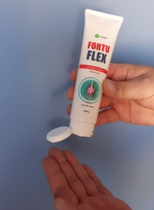

MEDICINA
, 08:50
Em 2020, a polícia do país recebeu numerosas queixas de pessoas enganadas, todas elas comprando medicamentos comuns de marca bem conhecida. Mas não só os medicamentos caros não os ajudaram a lidar com a artrite, osteoartrite e gota ou a reduzir a dor ou inflamação de qualquer forma, mas em alguns casos causaram graves efeitos secundários, até à atrofia completa das articulações! Antônia Costa teve um azar excecional: ela literalmente perdeu a capacidade de andar.
Antes de utilizar um medicamento para articulações vendido em farmácias.

9 dias após a utilização da droga de baixa qualidade.
15 dias após a utilização da droga de baixa qualidade.
Os preparativos que foram entregues à polícia foram enviados para exame laboratorial. Os peritos ficaram horrorizados ao encontrar neles muitos componentes nocivos, como o formaldeído (utilizado para embalsamar cadáveres), que entre todas essas substâncias eram as menos nocivas! Também continham metais pesados, silicone e muitas outras substâncias. Todos estes componentes contidos em produtos de marcas conhecidas podem causar reações alérgicas, inchaço, inflamação e mesmo necrose de tecidos. Como é que este veneno foi parar ao mercado farmacêutico português?
Como é frequentemente o caso, a culpa é da avarícia humana. Comerciantes de empresas bem conhecidas competiam de forma desleal no mercado. Promoviam marcas que lhes pagaram muito dinheiro por publicidade, subornaram peritos e organizações certificadoras! As pessoas do nosso país foram literalmente enganadas nos bastidores. E tudo teria ficado bem se o produto simplesmente não estivesse à altura do efeito declarado. Mas as autoridades não podiam ignorar os danos diretos para a saúde (sem dúvida, os funcionários têm familiares, que também podem cair nas armadilhas dos comerciantes sem escrúpulos).
Agora que a investigação está em curso, 49 pessoas já foram processadas, e a web ainda está a desvendar: todos os envolvidos, incluindo representantes de agências reguladoras que certificam drogas nocivas no nosso país, serão levados à justiça.
O Dr. Rogélio Oliveira é um flebologista de primeira classe com 32 anos de experiência.
É uma situação terrível. As pessoas são o maior bem da nossa nação. Como uma pessoa e como médico, estou indignado. Eles estão a destruir a saúde dos nossos cidadãos apenas por dinheiro. Quando vi a composição destas drogas, magoei literalmente todas as articulações do meu corpo! Isto é um verdadeiro veneno!
Antes de mais, só devem ser utilizados produtos naturais: sem conservantes, produtos químicos não orgânicos ou outras impurezas nocivas. A opção ideal é sair para a natureza, recolher várias ervas, mergulhá-las, fervê-las, misturar os extratos, chicoteá-las num creme ou emulsão e aplicá-las na articulação. A natureza tem tudo para manter uma pessoa saudável. E, ao contrário das preparações químicas, os ingredientes naturais são perfeitamente absorvidos pelo nosso corpo.
Naturalmente, a maioria das pessoas não tem essa opção. Vivemos num ambiente urbano moderno, no século XXI, é pouco provável que os jovens de hoje (e a geração mais velha) saibam sequer um pouco sobre ervas. Mas existem excelentes remédios naturais, incluindo os criados pelos nossos médicos. Por exemplo, o Fortuflex é um produto maravilhoso desenvolvido pelos nossos flebólogos. É um produto absolutamente não-comercial. Não o encontrará em grandes centros comerciais ou farmácias, não o verá publicitado na televisão. Mas ajuda e nunca fere as articulações.
"Fortuflex é baseado em óleos e ervas orgânicas. É uma fonte 100% natural de condrócitos, o material básico para a construção de juntas (cartilagem, tecido conjuntivo, etc.)."
Como é que ocorre a degradação das articulações? Simplificando, a articulação desgasta-se, o tecido conjuntivo afrouxa, as enzimas lubrificantes desaparecem e as diferentes partes da articulação começam a esfregar umas nas outras. Tudo isto acontece por causa da falta de condrócitos. No início, só se ouve um ligeiro estalido, o que é até divertido.
A articulação começa então a "contrair-se", e após uma longa caminhada, torna-se inchada, vermelha e dolorosa. O mais insidioso sobre esta doença é que um período agudo pode ser seguido por uma longa remissão, mas uma vez que recaia, pode colocá-lo numa cadeira de rodas para sempre.
Se começar a nutrir a articulação com condrócitos, esta começará a sarar a partir de dentro. Com terapia ativa e subsequente profilaxia com Fortuflex, a articulação recuperará 94-96%, o que significa que poderá voltar a viver uma vida plena!
É uma pena que com produtos de tão alta qualidade, eficazes e seguros disponíveis, os nossos cidadãos sejam forçados a comprar produtos nocivos e caros apenas porque os seus fabricantes têm dinheiro para publicidade e subornos de especialistas. Basta olhar para os resultados que os meus pacientes obtiveram após um mês de utilização do Fortuflex.
Antes do tratamento
"Dediquei toda a minha vida ao estudo da flebologia, com mais de 30 anos de trabalho honesto e árduo sob o meu cinto. Lamento, lamento verdadeiramente, que as pessoas sejam capazes de vender deliberadamente produtos de má qualidade na procura de dinheiro. Vou acompanhar de perto a situação e espero que todos os perpetradores sejam punidos e recebam sentenças reais."
Perguntamos ao médico onde pode comprar Fortuflex, um produto sobre o qual ele, como perito, deu muito boas críticas. Verificou-se que o produto só pode ser comprado em instituições médicas, através do formulário de encomenda oficial ou no website oficial do fabricante - os gigantes da indústria da saúde não deixam este produto entrar no mercado de massas. Não admira, porque os seus produtos, que são 3-5 vezes mais caros, não conseguiam fazer face à concorrência.
Não ponha a sua saúde em risco, cuide de si! E utilizar apenas produtos naturais recomendados por peritos incorruptíveis.
MEDICINA
, 08:50

Elena
Que horror, espero que estas pessoas vão para a prisão!
Thais
Porque está a apagar os meus comentários, escrevi três comentários sobre vários tipos de medicamentos conhecidos que só pioraram as minhas dores nas articulações!!!!!
Alexandra
Fortuflex foi-me recomendado há algum tempo por uma amiga que trabalha num hospital, ela própria o experimentou. Ela ficou encantada com os resultados, mas eu nunca o comprei. Encomendei-o agora.

Isabel
Não se arrependerá. Recomendo-o vivamente a todos, já sofro de artrite há mais de 2 anos e já me conformei com ele. Tive dores terríveis, é só dizer, e os meus joelhos estavam sempre a inchar. Foi terrível. Após um curso deste medicamento, sinto que estou a ter a minha vida de volta!

Joana
Tenho gota e quando usei o laser não ajudou, mas Fortuflex aliviou a dor e inflamação quase instantaneamente. Agora ando cerca de 2 milhas por dia, enquanto antes não conseguia sequer andar 500 metros..
Subscreva no nosso boletim
Até 50% de desconto em voos
leia mais...